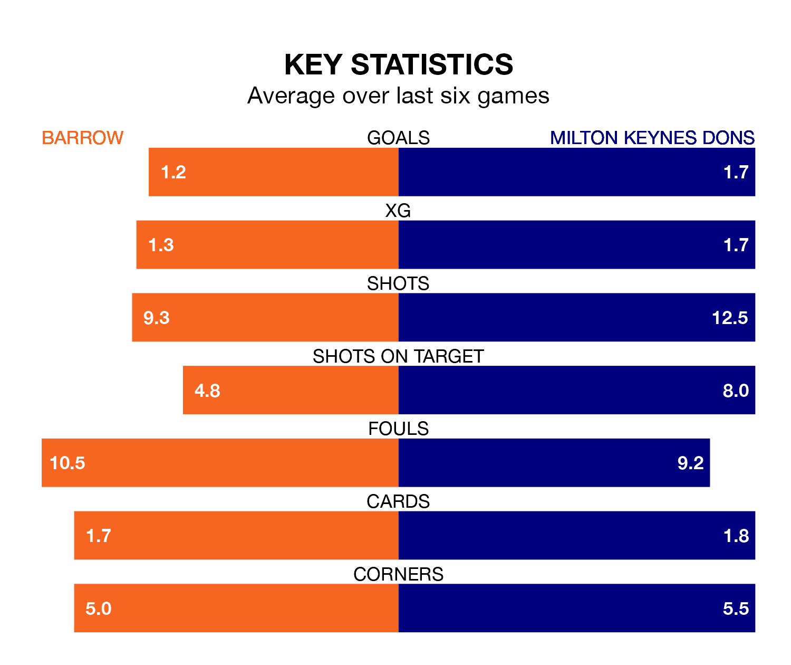

Milton Keynes Dons travel to Barrow on Saturday in EFL League Two.
The visitors come into the game on the back of a win in their last match, having beaten Gillingham 2-1 at home, with goals from Michael Jordan Williams and Alex Gilbey.
The Bluebirds, meanwhile, drew their last match, 1-1 against Notts County, with their goal scored by Kian Spence.
With 47 goals in 28 games so far this season, Milton Keynes are scoring more than average in the league with 1.7 goals per game. And they are conceding fewer than average, letting in 36 goals at a rate of 1.3 per game.
Barrow, meanwhile, are below average scorers, with 1.4 goals per game, compared to a league average of 1.5. They have conceded 1.0 goal per game.
The Bluebirds are fourth in the table after 29 games, of which they have won 13 and drawn 11, earning 50 points.
Dons are two places behind the hosts in sixth, with 14 wins and six draws putting them on 48 points.
With Paul Farman between the sticks, Barrow can rely on one of the league's safest pair of hands. He has kept nine clean sheets in his 27 appearances this season in EFL League Two.
In the Dons' net, Craig MacGillivray has six clean sheets in 24 games. He has conceded a goal every 83 minutes, 10% more often than the 90 minutes between goals for Farman.
Barrow are in disappointing form in EFL League Two, with one win and three draws from their last six games.
With four wins and two losses over that period, the away side's form is much better – they have taken 12 points from 18, compared to the Bluebirds' six.
Saturday's match will be refereed by Tom Reeves, who has taken charge of seven EFL League Two games so far this season, issuing one red card and booking 22 players. He has awarded three penalties.
The last Barrow game Reeves refereed was a 2-0 away win against Forest Green Rovers on October 24. His last Milton Keynes match was their 5-3 win away at Wrexham on August 5.
Updated: 10:40 (UTC), 01/02/24